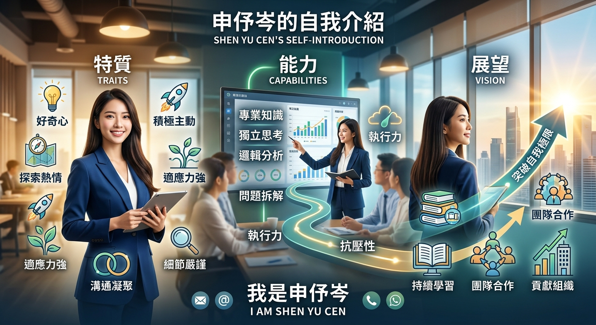

生日星座：0611 雙子座
畢業學校：名間國中
個人特色亮點：對新事物有好奇心
期待：在不同的學習與挑戰中拓展視野
大家好，我是申伃岑。從小我就對周遭的事物保持著強烈的好奇心與探索熱情，這樣的性格塑造了我積極主動、勇於接受挑戰的特質。在學習與成長的過程中，我習慣以開放的心態面對各種新環境，並能迅速調整狀態以融入團隊。身為一個注重細節且善於溝通的人，我非常重視與他人之間的互動，習慣透過傾聽與協調凝聚共識，並以踏實嚴謹的態度走向每一個目標。
在專業能力與過往經驗的累積上，我始終維持著精益求精的态度。無論是在專業知識的學習還是實務專案的執行過程中，我都展現出獨立思考與邏輯分析的能力。面對複雜的任務時，我擅長將問題拆解並制定清晰的執行路徑；當遭遇突發狀況或高壓環境時，我亦能保持冷靜、靈活應變，從反務反思中快速成長。這些歷練不僅培養了我堅韌的抗壓性，也讓我具備了高效的執行力與團隊合作精神。
展望未來，我期待能夠將自己的專業積累與學習熱情投入到更具挑戰性的領域中。對我而言，持續學習與突破自我極限是保持進步的核心動力。我渴望能在未來的發展舞台上，與優秀的團隊成員並肩作戰，激發更多創意的火花，並為組織帶來實質且積極的貢獻。非常感謝您花時間了解我，我是申伃岑，期待能有機會與您進一步交流並攜手合作。
